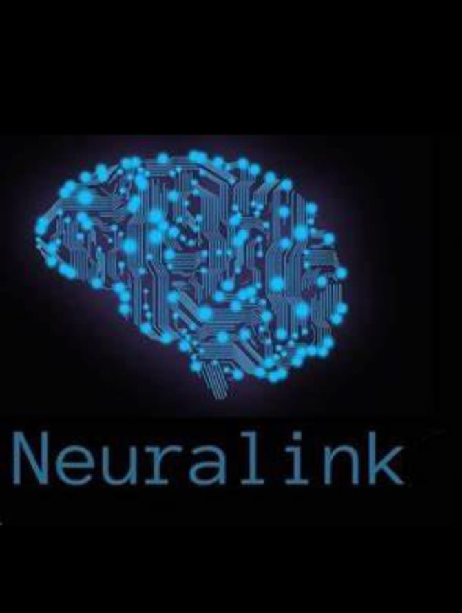

.jpeg)
.jpeg)

.jpeg)
.jpeg)
ELON MUSK
TESLA
SPACEX
The company was incorporated as Tesla Motors, Inc. on July 1, 2003, by Martin Eberhard and Marc. Elon Musk took an active role within the company and oversaw Roadster product design at a detailed level, but was not deeply involved in day-to-day business operations. In May 2010, Tesla purchased what would later become the Tesla Factory in Fremont, California, from Toyota for $42 million,[34] and opened the facility in October 2010. In November 2016, Tesla acquired SolarCity, in an all-stock $2.6 billion deal, and entered the photovoltaics market. Tesla opened its first "Gigafactory" outside the United States in Shanghai, China, in 2019. Giga Shanghai was the first automobile factory in China fully owned by a foreign company.
Space Exploration Technologies Corp. (SpaceX) is an American spacecraft manufacturer, launcher, and a satellite communications corporation headquartered in Hawthorne, California. It was founded in 2002 by Elon Musk with the stated goal of reducing space transportation costs to enable the colonization of Mars. The company manufactures the Falcon 9, Falcon Heavy, and Starship launch vehicles, several rocket engines, Cargo Dragon and Crew Dragon spacecraft, and Starlink communications satellites. In January 2019 SpaceX announced it would lay off 10% of its workforce to help finance the Starship and Starlink projects.[82] Construction of initial prototypes and tests for Starship started in early 2019 in Florida and Texas.
.jpeg)
Neuralink Corporation is an American neurotechnology company that develops implantable brain–computer interfaces (BCIs) based in Fremont, California. Founded by Elon Musk and a team of seven scientists and engineers, Neuralink was launched in 2016 and was first publicly reported in March 2017. The probes, composed mostly of polyimide, a biocompatible material, with a thin gold or platinum conductor, are inserted into the brain through an automated process performed by a surgical robot. Neuralink says they have engineered a surgical robot capable of rapidly inserting many flexible probes into the brain, which may avoid the problems of tissue damage and longevity issues associated with larger and more rigid probes.
Twitter is an online social media and social networking service owned and operated by American company Twitter, Inc., on which users send and respond publicly or privately texts, images and videos known as "tweets".[9] Registered users can tweet, like, 'retweet' tweets and direct message (DM), while unregistered users only have the ability to view public tweets. Users interact with Twitter through browser or mobile frontend software, or programmatically via its APIs. In June 2022, Twitter announced a partnership with e-commerce giant Shopify, Shopify merchants. On August 23, 2022, the contents of a whistleblower complaint by former information security head Peiter Zatko to the United States Congress were published. Zatko had been fired by Twitter in January 2022.
PayPal was originally established by Max Levchin, Peter Thiel, and Luke Nosek in December 1998 as Confinity,a company that developed security software for hand-held devices. Having had no success with that business model, however, it switched its focus to a digital wallet.[10] The first version of the PayPal electronic payments system was launched in 1999. Shortly after PayPal's IPO, the company was acquired by eBay on October 3, 2002,[21] for $1.5 billion in eBay stock. A week after the takeover, Musk revamped Twitter Blue, increasing its price to $8 per month and adding new features, including the "blue checkmark" verification that had previously been reserved for high-profile confirmed users.
XCOM (originally called X-COM) is a science fiction video game franchise featuring an elite international organization tasked with countering alien invasions of Earth. The series began with the strategy video game X-COM: UFO Defense created by Julian Gollop's Mythos Games and MicroProse in 1994. The original lineup by MicroProse included six published and at least two canceled games, as well as two novels. The X-COM core series consisted of four main games published by MicroProse: UFO: Enemy Unknown (also known as X-COM: UFO Defense, PC and Amiga in 1994, Sony PlayStation in 1995), X-COM: Terror from the Deep (PC in 1995, PlayStation in 1996), X-COM: Apocalypse (PC in 1997) and X-COM: Interceptor (PC in 1998).
Elon Reeve Musk FRS is a business magnate and investor. He is the founder, CEO and chief engineer of SpaceX; angel investor, CEO and product architect of Tesla, Inc.; owner and CEO of Twitter, Inc
Elon Musk’s personal wealth is now $222 billion, widening his gap as the richest person in the world according to Bloomberg’s Billionaires Index. Musk’s personal wealth skyrocketed an extra $10.6 billion after a secondary share sale by investors, announced last week, valued SpaceX over $100 billion, CNBC reported.
Tesla CEO Elon Musk, who's originally from South Africa, has perfected the art of remaining focused. In fact, there was a time during Tesla inc's infancy when Musk would sleep under his desk and work 75-hour weeks until a specific problem was solved and his goals were accomplished.